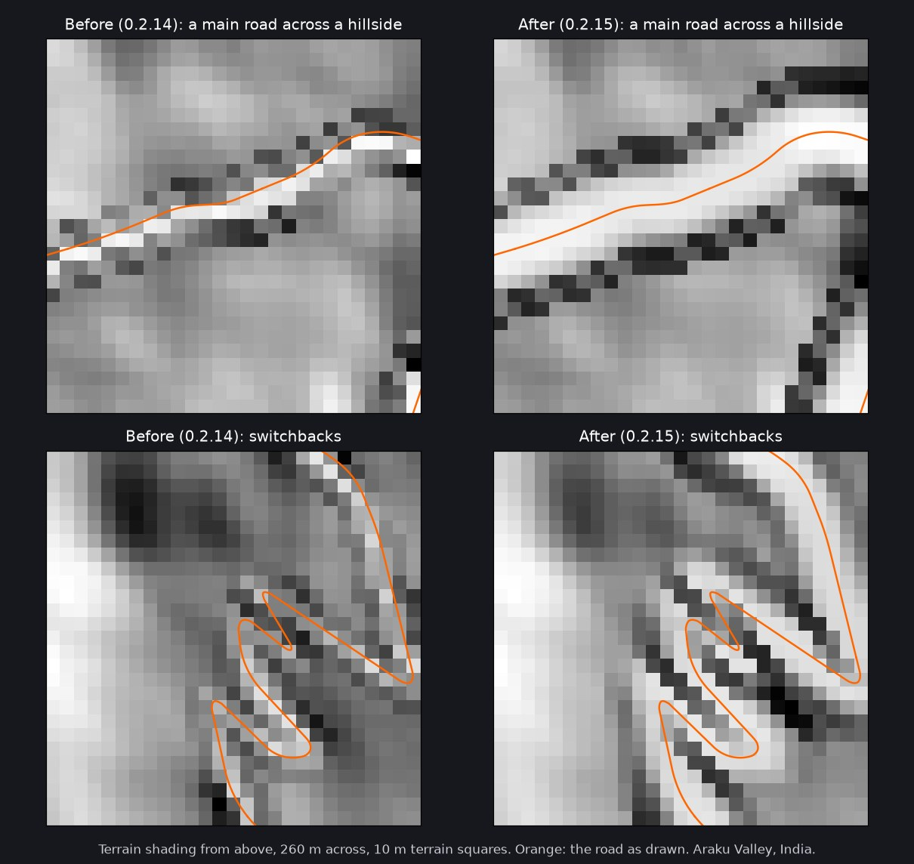

MapNG
MapNG🗻 Everything on the ground the game draws
MapNG placed things, and shaped the terrain under roads, on a grid that was up to one terrain square away from the one the game draws. With 1 m squares nobody could see it. On a 20 km map with 10 m squares it was up to 10 m: trees stood metres in the air on hillsides, and a road's levelled bench was cut beside the road instead of under it.
Everything now uses the game's grid (measured in game to the centimetre). On coarse squares a road also gets a flat bench at least one square wider on each side, so it no longer comes out as a row of teeth.

🧰 Other fixes
- Switchback roads: on roads with hairpins, whole pieces could take the height of the arm before the turn and end up tens of metres under the ground. On the tester's map, road joints with a height step went from 33 (worst 45 m) to 1.
- A ramp's bridge beside a wide bridge (Untouched terrain): the ramp was built on a span of its own, 2.8 m below the main deck. Bridges side by side on one level now share one height.
- Lane counts keep their width: a six-lane road was squeezed into 12 m. Lanes counted in OpenStreetMap are now drawn at full width.
💧 Rivers, lakes and sea are three switches
"Rivers, lakes and sea" is now Rivers, streams and canals, Lakes and ponds and Sea, for areas where one is mapped well and another is not. An old "water off" setting or share code switches rivers and lakes off. There is also a Footbridges switch, which leaves out the bridges of paths, cycleways and steps.
🙏 Thanks
Thanks to the testers in the Discord who sent screenshots and export reports within hours of 0.2.14. Map data © OpenStreetMap contributors and the Overture Maps Foundation. Elevation: Mapzen / AWS Terrain Tiles.
Heads-up: the Windows build still isn't code-signed. If SmartScreen warns you, choose More info, then Run anyway.
Found something? Post in the MapNG Discord or open a GitHub issue. The export_report.txt inside the level's ZIP helps a lot. 🧡